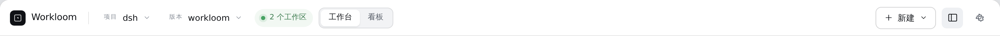
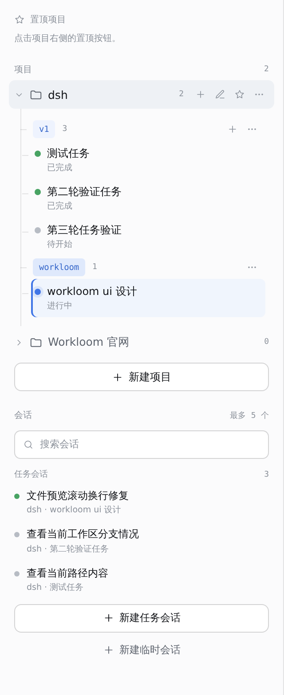
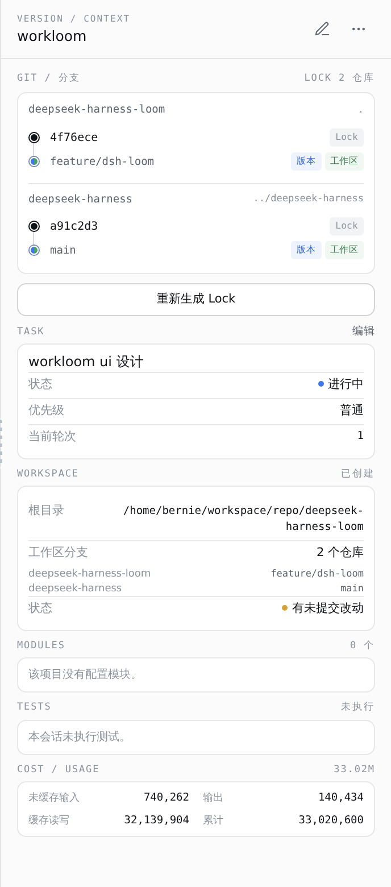

第三轮任务验证
待开始 · 普通优先级 · v1
任务描述
执行配置
一个视图只保留一个主操作。创建、生成 Lock、开始执行使用黑底主按钮；浏览、上一步、重新生成使用描边按钮；取消和跳过保持无边框；删除收进“更多”菜单，避免和主操作并排。
将删除这个任务、它的执行记录，以及已清理的工作区记录。未清理的工作区必须先处理。
Workloom 不会级联删除版本或任务。请先删除这个版本；如果只是查看，可以返回。
删除项目后无法恢复项目配置和模块定义。
接管会先停止当前执行、工具和子 Agent。它不会自动提交、重置或丢弃工作区改动。
重做 Workloom 主界面：收敛左栏信息密度，重画顶栏层级，并把右栏的版本、任务、工作区与分支关系整理成可扫描的上下文。



项目/版本用安静的文字选择器，不加厚边框；活跃工作区用绿点；工作台/看板用分段控件。顶栏“新建”用描边次按钮，黑色主按钮留给当前视图的主操作（开始执行或打开会话），避免两处抢焦点。
320px；行高 32px；项目行 hover 才出现新增版本、编辑、更多。版本用浅蓝 chip，任务用状态点 + 状态文字；选中任务只加 2px 蓝色左线，不用整块深蓝。置顶空态保留一句操作提示。
344px；标题只放编辑和更多，删除收进更多。第一屏是 Git 分支图：按仓库逐个列出 Lock、版本 ref、工作区 ref，多仓库不能省略；下面依次是任务、工作区，模块/测试/用量默认展开。右栏不放主按钮，主操作留在中间工作台。
默认 344px；信息全部展开；右栏向左拉变宽，底部向上拉变高。
版本与工作区指向同一分支时，不画两条线；一个分色节点 + 两个 role 标签。
只画 ref 关系，不伪造提交历史；版本 ref 蓝，工作区当前 ref 绿。
拖的是面板上边缘，不是水平滚动条；向上拉展开，向下拉收起。
底部面板展开后，工作台高度让位；右栏宽度不变。